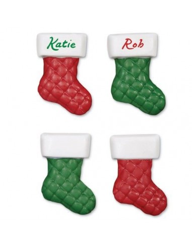

Calcetines Navideños |
Muestra: |
|  |
|
La tradición de colocar medias o calcetines para dejar los regalos de Navidad se extendió desde el mundo anglosajón; |
| Países | % Uso Calcetines |
| Japón | 70% |
| Reino Unido | 67% |
| Argentina | 24% |
| Chile | 14% |
|
¿Quieres saber cómo votaron las personas?
|